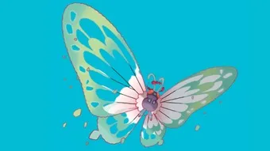

<!--<!doctype html>
<html lang="en">
<head>
  <meta charset="utf-8" />
  <title>Gigantamax Butterfree Raid Guide — Counters, Weakness & Best Teams | Pokémon GO</title>
  <meta name="viewport" content="width=device-width, initial-scale=1" />
  <meta name="description" content="Gigantamax Butterfree raid guide for Pokémon GO — type weaknesses, top counters, recommended teams, moveset mapping, DPS & energy tips, weather & Mega notes, IV/CP targets, and FAQs to clear Gigantamax Butterfree reliably." />
  <link rel="canonical" href="https://pokemongaming.in/gigantamax-butterfree-raid-guide.html" />
  <style>
    /* Butterfree theme: sky blue + lavender */
    :root{
      --bg:#f6fbff;
      --card:#ffffff;
      --accent:#cfe8ff; /* sky */
      --lav:#d8c8ff;    /* lavender */
      --ink:#122034;
      --muted:#516074;
      --note:#fff8ff;
    }
    body { font-family: Inter, system-ui, -apple-system, "Segoe UI", Roboto, Arial; color:var(--ink); background:var(--bg); line-height:1.65; padding:20px; max-width:980px; margin:0 auto; }
    header h1 { font-size:1.9rem; margin-bottom:6px; color:#102433; }
    .lead { font-size:1.05rem; margin-bottom:1rem; color:var(--muted); }
    .small { font-size:0.92rem; color:var(--muted); }
    nav.toc { background:linear-gradient(180deg,var(--accent),#fff); border:1px solid rgba(140,180,220,.45); padding:12px; margin:14px 0; border-radius:10px; }
    nav.toc h2 { margin:0 0 8px 0; font-size:1.05rem; color:#0f2a3a; }
    nav.toc ul { margin:0; padding-left:18px; color:var(--muted); }
    section { margin-top:1.25rem; background:var(--card); padding:14px; border-radius:10px; border:1px solid rgba(200,200,230,.45); }
    h2 { font-size:1.25rem; margin-bottom:8px; color:#0f2a3a; }
    h3 { font-size:1.03rem; margin-bottom:6px; color:#0f2a3a; }
    table { border-collapse:collapse; width:100%; margin:10px 0 14px; background:transparent; }
    th, td { border:1px solid rgba(200,200,230,.6); padding:10px 12px; text-align:left; vertical-align:top; color:var(--ink); }
    th { background:var(--lav); font-weight:700; color:#0f2a3a; }
    .note { background:var(--note); padding:10px; border-left:4px solid #b8d9ff; margin:12px 0; border-radius:6px; color:var(--muted); }
    .pro-tip { background:#eef7ff; padding:10px; border-left:4px solid #9fd3ff; margin:12px 0; border-radius:6px; color:var(--muted); }
    ol, ul { margin-left:1.1rem; color:var(--muted); }
    .author-box { border-top:1px dashed rgba(140,180,220,.45); padding-top:12px; margin-top:22px; display:flex; gap:12px; align-items:center; }
    .author-box img { width:56px; height:56px; border-radius:50%; object-fit:cover; border:2px solid var(--lav); }
    .cta { display:inline-block; padding:8px 12px; background:#6aa9ff; color:white; border-radius:8px; text-decoration:none; }
    .faq q { font-style:italic; color:#254a63; }
    .muted { color:var(--muted); font-size:0.95rem; }
    @media (max-width:700px) { body { padding:14px; } section { padding:12px; } }
  </style>
</head>
<body>
<article>
  <header>
    <h1>Gigantamax Butterfree Raid Guide — Counters, Weakness & Best Teams | Pokémon GO</h1>
    <p class="lead">Gigantamax Butterfree turns the familiar Bug/Flying flutterer into a raid-scale aerial menace — massive HP, amplified charged moves (Dazzling Gleam / Bug Buzz / Psychic variants appear in events), and a high penalty for bringing the wrong counters. This guide walks you through type matchups, ranked counters, moveset mapping, DPS & energy logic for long fights, sample parties for elite and budget players, weather & Mega notes, IV/CP advice, and practical step-by-step tactics so you clear Butterfree quickly and with minimal revives.</p>
    <p class="small">Last updated: <strong>October 29, 2025</strong> — US English</p>
  </header>

  <nav class="toc" aria-label="Table of contents">
    <h2>Table of Contents</h2>
    <ul>
      <li><a href="#overview">Gigantamax Butterfree — Quick Overview</a></li>
      <li><a href="#weaknesses">Weaknesses & Resistances (Type Chart)</a></li>
      <li><a href="#best-counters">Best Counters (Ranked)</a></li>
      <li><a href="#moveset-mapping">Moveset Mapping & Recommended Counters</a></li>
      <li><a href="#dps-energy">DPS & Energy Considerations</a></li>
      <li><a href="#players-needed">Players Required & Party Types</a></li>
      <li><a href="#sample-teams">Sample Party Builds</a></li>
      <li><a href="#strategy">Battle Strategy — Step by Step</a></li>
      <li><a href="#iv-cp">IV / CP & Powering Advice</a></li>
      <li><a href="#weather">Weather & Mega Notes</a></li>
      <li><a href="#catch">Raid Rewards & Catch Tips</a></li>
      <li><a href="#related">Related Guides</a></li>
      <li><a href="#faq">FAQ</a></li>
    </ul>
  </nav>

  <section id="overview">
    <h2>Gigantamax Butterfree — Quick Overview</h2>
    <p>Butterfree as a Gigantamax raid boss emphasizes sustained aerial and special damage. Its Bug/Flying typing means it can threaten with strong Bug moves (Bug Buzz), Flying moves (Hurricane / Aerial Ace variants in events) and Fairy/Psychic coverage in special spawns. The G-Max HP pool means fights reward high-EPS attackers and reliable super-effective coverage. Your core objective is to exploit Butterfree’s type weaknesses while avoiding Ground and many common melee attackers that are resisted.</p>

    <p class="pro-tip"><strong>Pro tip:</strong> Butterfree is exceptionally vulnerable to Rock moves (4×). If you have powered rock attackers, prioritize them — a single well-placed Rock team will drop the required player count dramatically.</p>
  </section>

  <section id="weaknesses">
    <h2>Weaknesses & Resistances (Type Chart)</h2>
    <p>Bug/Flying has a distinctive type profile. Use this chart to pick the safest counters.</p>

    <table aria-label="Butterfree weakness chart">
      <thead>
        <tr><th>Type</th><th>Effect vs Gigantamax Butterfree</th></tr>
      </thead>
      <tbody>
        <tr><td>Rock</td><td><strong>4×</strong> — primary and most dangerous weakness. Rock moves devastate.</td></tr>
        <tr><td>Electric</td><td>2× — strong; electric attackers work well.</td></tr>
        <tr><td>Ice</td><td>2× — Ice is effective (covers Flying).</td></tr>
        <tr><td>Fire</td><td>2× — Fire hits Bug for super-effective damage.</td></tr>
        <tr><td>Ground</td><td>Immune — Flying grants immunity to Ground moves.</td></tr>
        <tr><td>Fighting / Bug / Grass</td><td>Resisted — avoid these as primary attackers.</td></tr>
      </tbody>
    </table>

    <p class="note">Important: The 4× Rock weakness means a small group with top Rock attackers (Tyranitar, Rampardos, Rhyperior) can clear much faster than many Electric/Fire picks — plan accordingly.</p>
  </section>

  <section id="best-counters">
    <h2>Best Counters (Ranked)</h2>
    <p>The list below emphasizes practical availability, raid performance against long G-Max HP pools, and synergy. Rock counters are ranked highest because of the 4× weakness.</p>

    <table aria-label="Best counters list">
      <thead>
        <tr><th>Rank</th><th>Pokémon</th><th>Moveset</th><th>Why</th></tr>
      </thead>
      <tbody>
        <tr><td>1</td><td>Tyranitar</td><td>Smack Down / Stone Edge</td><td>Top Rock attacker — huge damage vs Butterfree and widely available.</td></tr>
        <tr><td>2</td><td>Rampardos</td><td>Smack Down / Head Smash</td><td>Highest raw Rock DPS — ideal in small groups if you have it.</td></tr>
        <tr><td>3</td><td>Rhyperior</td><td>Smack Down / Rock Wrecker or Stone Edge</td><td>Bulky Rock option — soaks damage while hitting hard.</td></tr>
        <tr><td>4</td><td>Terrakion</td><td>Smack Down / Rock Slide or Sacred Sword</td><td>High Rock DPS with Fighting utility; good overall.</td></tr>
        <tr><td>5</td><td>Zekrom</td><td>Charge Beam / Bolt Strike</td><td>Top Electric attacker — excellent alternative when Rock is lacking.</td></tr>
        <tr><td>6</td><td>Raikou</td><td>Thunder Shock / Wild Charge</td><td>Accessible Electric spammer for many players.</td></tr>
        <tr><td>7</td><td>Mamoswine</td><td>Powder Snow / Avalanche</td><td>Top Ice DPS — good if Butterfree has Dragon or Flying-heavy movesets.</td></tr>
        <tr><td>8</td><td>Reshiram</td><td>Fire Fang / Overheat</td><td>Powerful Fire option for pure Bug-heavy spawns.</td></tr>
        <tr><td>9</td><td>Charizard (Blast Burn)</td><td>Fire Spin / Blast Burn</td><td>Blast Burn Charizard is a high-impact Fire pick if you have the move.</td></tr>
        <tr><td>10</td><td>Metagross</td><td>Bullet Punch / Meteor Mash</td><td>Neutral pick for mixed teams; Meteor Mash gives powerful single charges.</td></tr>
      </tbody>
    </table>

    <p class="small">If you lack rock legendaries, focus on Tyranitar + several Raikou or other Electric attackers — they remain highly effective.</p>
  </section>

  <section id="moveset-mapping">
    <h2>Moveset Mapping & Recommended Counters</h2>
    <p>Always check the charged-move preview. Below are common charged-move pairings and the recommended counter focus.</p>

    <table aria-label="moveset mapping">
      <thead>
        <tr><th>Common Charged Moves</th><th>Primary Counter Type</th><th>Recommended Pokémon</th></tr>
      </thead>
      <tbody>
        <tr><td>Bug Buzz / Dazzling Gleam</td><td>Rock / Poison</td><td>Tyranitar, Rampardos, Rhyperior; Toxtricity if Poison needed</td></tr>
        <tr><td>Psychic / Psyshock (event)</td><td>Ghost / Dark</td><td>Giratina, Gengar (windows), Darkrai</td></tr>
        <tr><td>Hurricane / Aerial Ace</td><td>Rock / Electric / Ice</td><td>Rampardos, Zekrom, Mamoswine</td></tr>
        <tr><td>Shadow Ball (rare)</td><td>Ghost</td><td>Giratina, Gengar — use Ghost if Psychic interplay occurs</td></tr>
      </tbody>
    </table>

    <p class="note">Default strategy: if you see Rock-threat moves in the preview (Hurricane + Bug Buzz), rock attackers remain top — otherwise prioritize Electric + Ice slots as fallback.</p>
  </section>

  <section id="dps-energy">
    <h2>DPS & Energy Considerations</h2>
    <p>Gigantamax bosses reward EPS (energy per second) and high-value charge moves. Use these tactical rules when building and using your team:</p>
    <ul>
      <li><strong>Fast-move EPS:</strong> Fast energy gain (e.g., Smack Down spam for rock attackers) increases your number of big charges in long fights.</li>
      <li><strong>Charge-move value:</strong> Prioritize high-value charges (Head Smash, Stone Edge, Bolt Strike) into shieldless windows.</li>
      <li><strong>Shield economy:</strong> Bait shields with medium charges and save at least one shield for your primary nuke in small groups.</li>
      <li><strong>Swap economy:</strong> Limit swaps — each swap burns time and revives in long HP fights are costly.</li>
    </ul>

    <p class="pro-tip">In duo/trio attempts, prioritize two heavy Rock attackers and one Electric backup — Rock does the lion’s share of damage due to the 4× weakness.</p>
  </section>

  <section id="players-needed">
    <h2>How Many Players Are Needed?</h2>
    <table aria-label="players-needed">
      <thead>
        <tr><th>Team Quality</th><th>Players Required (Approx.)</th><th>Notes</th></tr>
      </thead>
      <tbody>
        <tr><td>Top meta (Rampardos / Tyranitar core)</td><td>2–3</td><td>With ideal Rock counters & weather, small groups clear quickly.</td></tr>
        <tr><td>Strong local groups</td><td>3–5</td><td>Most common for active raiders using a mix of Rock/Electric.</td></tr>
        <tr><td>Mixed / casual</td><td>6–9</td><td>Use multiple Raikou / Tyranitar / Mamoswine fillers to reach safe clears.</td></tr>
      </tbody>
    </table>

    <p class="note">Weather (Sunny for Fire, Windy for Flying) and Megas can change numbers — coordinate for best results.</p>
  </section>

  <section id="sample-teams">
    <h2>Sample Party Builds — Elite, Balanced & Budget</h2>

    <h3>Elite (2–3 players)</h3>
    <ol>
      <li>Rampardos (Smack Down / Head Smash)</li>
      <li>Tyranitar (Smack Down / Stone Edge)</li>
      <li>Zekrom (Charge Beam / Bolt Strike)</li>
    </ol>

    <h3>Balanced (3–5 players)</h3>
    <ol>
      <li>Tyranitar</li>
      <li>Rhyperior</li>
      <li>Raikou</li>
      <li>Mamoswine</li>
      <li>Charizard (Blast Burn) or Reshiram (if Fire slot needed)</li>
    </ol>

    <h3>Budget / F2P (6–9 players)</h3>
    <ol>
      <li>Several Raikou or Electivire</li>
      <li>High-CP Tyranitar (even without perfect moves)</li>
      <li>Gyarados or Mamoswine as fillers</li>
      <li>One or two bulky Rhyperior/Excadrill</li>
    </ol>

    <p class="small">Tip: In budget groups, rank your Rock attackers by moveset first (Smack Down users) and then CP — a high-level Smack Down user is worth more than a perfect IV glass-cannon.</p>
  </section>

  <section id="strategy">
    <h2>Battle Strategy — Step by Step</h2>
    <ol>
      <li><strong>Pre-raid:</strong> Check the charged move preview. If Rock-relevant coverage (Hurricane + Bug Buzz) appears, lock in Rock attackers.</li>
      <li><strong>Lead selection:</strong> Lead with a Rampardos or Tyranitar to force early shields and build energy fast.</li>
      <li><strong>Shield management:</strong> Save one shield for your primary Stone Edge/Head Smash salvo in small groups; bait shields with medium charges.</li>
      <li><strong>Swap & tank:</strong> Rotate in Rhyperior or a bulky Tyranitar to absorb any unexpected heavy charged moves, then swap back to your DPS.</li>
      <li><strong>Late-stage finishing:</strong> Coordinate big charges into the last 20–30% HP window — they’re most efficient there for reducing Premier Ball waste.</li>
      <li><strong>Revive policy:</strong> Stagger revives and rejoin only when a safe energy window appears so you don't get a faint-wave.</li>
    </ol>

    <p class="pro-tip">Call one teammate to preserve one shield for the primary Rock nuke — protecting that single charge can swing a duo clear into a win.</p>
  </section>

  <section id="iv-cp">
    <h2>IV / CP & Powering Advice</h2>
    <p>Moveset and level are more important than perfect IVs for raid counters. Suggested CP targets (L40):</p>

    <table aria-label="iv cp table">
      <thead>
        <tr><th>Pokémon</th><th>Target CP (L40)</th><th>Why</th></tr>
      </thead>
      <tbody>
        <tr><td>Rampardos</td><td>~3200+</td><td>Highest Rock DPS — level matters a lot.</td></tr>
        <tr><td>Tyranitar</td><td>~3000–3400+</td><td>Bulk + Stone Edge spikes; great all-rounder.</td></tr>
        <tr><td>Rhyperior</td><td>~3200+</td><td>Bulky Rock with good survivability in long fights.</td></tr>
        <tr><td>Zekrom</td><td>~3200–3500+</td><td>Bolt Strike scales well; maximize CP for survivability.</td></tr>
      </tbody>
    </table>

    <p class="note">Candy XL: only spend XL on the handful of counters you’ll use repeatedly (Tyranitar/Rampardos) — TM investments to get Smack Down / Stone Edge are usually higher priority than XL for most players.</p>
  </section>

  <section id="weather">
    <h2>Weather & Mega Notes</h2>
    <ul>
      <li><strong>Windy:</strong> Boosts Flying/Dragon moves — little direct benefit to counters; may increase boss damage.</li>
      <li><strong>Sunny/Clear:</strong> Boosts Fire — helps Charizard/Reshiram if you plan a Fire slot.</li>
      <li><strong>Rain:</strong> Boosts Water — avoid waiting for it for Butterfree.</li>
      <li><strong>Megas:</strong> Mega Tyranitar (if available) or Mega Aerodactyl (rare) can help Rock throughput — coordinate Megas with group to maximize value.</li>
    </ul>

    <p class="small">Expert note: don’t over-wait for weather — correct counters (especially Rock) matter far more than small weather boosts for Butterfree.</p>
  </section>

  <section id="catch">
    <h2>Raid Rewards & Catch Tips</h2>
    <p>Gigantamax raids drop rare candy, TMs, Stardust and a high-CP Butterfree catch. Use Golden Razz + curveball to maximize capture chance. Save Premier Balls early and aim for great/curve/ultra throws when boss HP is low. If you're IV hunting, save several Premier Balls for multiple throws to improve odds.</p>

    <table aria-label="catch cp table">
      <thead>
        <tr><th>Trainer Level</th><th>Estimated Catch CP (Unboosted)</th></tr>
      </thead>
      <tbody>
        <tr><td>20</td><td>~1200–1500</td></tr>
        <tr><td>30</td><td>~1800–2200</td></tr>
        <tr><td>40+</td><td>~2400–3000</td></tr>
      </tbody>
    </table>

    <p class="small">Post-raid: Butterfree is mostly a collector/novelty catch — keep high-IVs for dex completion and themed teams.</p>
  </section>

  <section id="related">
    <h2>Related Guides</h2>
    <ul>
      <li><a href="/gigantamax-alcremie-raid-guide.html">Gigantamax Alcremie Raid Guide</a></li>
      <li><a href="/gigantamax-blastoise-raid-guide.html">Gigantamax Blastoise Raid Guide</a></li>
      <li><a href="/gigantamax-hatterene-raid-guide.html">Gigantamax Hatterene Raid Guide</a></li>
      <li><a href="/gigantamax-melmetal-raid-guide.html">Gigantamax Melmetal Raid Guide</a></li>
      <li><a href="/gigantamax-appletun-raid-guide.html">Gigantamax Appletun Raid Guide</a></li>
      <li><a href="/gigantamax-sandaconda-raid-guide.html">Gigantamax Sandaconda Raid Guide</a></li>
    </ul>
  </section>

  <section id="faq">
    <h2>Frequently Asked Questions (FAQ)</h2>
    <div class="faq">
      <h3>Q: <q>What's the single best counter to Gigantamax Butterfree?</q></h3>
      <p>A: Rampardos (Smack Down / Head Smash) or Tyranitar (Smack Down / Stone Edge) are the single best counters because Rock moves exploit Butterfree's 4× Rock weakness.</p>

      <h3>Q: <q>Can I solo Gigantamax Butterfree?</q></h3>
      <p>A: Soloing a Gigantamax boss is highly unlikely due to the enlarged HP pool. Only the most optimized players with multiple maxed legendaries and perfect weather might attempt it. Realistic clears are 2–5 trainers depending on roster quality.</p>

      <h3>Q: <q>Should I use Electric counters instead of Rock?</q></h3>
      <p>A: Rock is preferable due to the 4× multiplier. Use Electric counters (Zekrom, Raikou) only if you don’t have Rock attackers; they still perform well but require more players.</p>

      <h3>Q: <q>Which TMs should I prioritize?</q></h3>
      <p>A: Priority TMs: Smack Down for Rock attackers (if you lack it), then Stone Edge / Head Smash for charge moves. For Electric users, Bolt Strike / Wild Charge are top picks.</p>

      <h3>Q: <q>Which Pokémon should I power first?</q></h3>
      <p>A: Rampardos and Tyranitar (Smack Down users) if you frequently face Butterfree or similar Bug/Flying threats. Otherwise, prioritize a strong Electric attacker like Zekrom for broader utility.</p>
    </div>
  </section>

  <footer class="muted">
    <div class="author-box">
      
      <div>
        <strong>Written by Abhishek</strong>
        <p class="small">Pokémon GO Trainer & Guide Writer. I field-test team compositions in real raids and update guides to reflect current raid mechanics and community strategies.</p>
        <p class="small"><a class="cta" href="/guides.html">See all guides</a></p>
      </div>
    </div>

    <p class="small" style="margin-top:12px;">Disclaimer: Pokémon, Pokémon GO and related trademarks are the property of Nintendo / The Pokémon Company. This guide is fan-made and not affiliated with the trademark owners.</p>
  </footer>

  <!-- FAQ schema (JSON-LD) -->
  <script type="application/ld+json">
  {
    "@context": "https://schema.org",
    "@type": "FAQPage",
    "mainEntity": [
      {
        "@type": "Question",
        "name": "What's the single best counter to Gigantamax Butterfree?",
        "acceptedAnswer": {
          "@type": "Answer",
          "text": "Rampardos (Smack Down / Head Smash) or Tyranitar (Smack Down / Stone Edge) are the top counters because Rock moves exploit Butterfree's 4× Rock weakness."
        }
      },
      {
        "@type": "Question",
        "name": "Can I solo Gigantamax Butterfree?",
        "acceptedAnswer": {
          "@type": "Answer",
          "text": "Soloing a Gigantamax boss is highly unlikely due to the enlarged HP pool. Only the most optimized players with multiple maxed legendaries and perfect weather might attempt it."
        }
      },
      {
        "@type": "Question",
        "name": "Should I use Electric counters instead of Rock?",
        "acceptedAnswer": {
          "@type": "Answer",
          "text": "Rock is preferable due to the 4× multiplier. Use Electric counters (Zekrom, Raikou) only if you don’t have Rock attackers; they still perform well but require more players."
        }
      }
    ]
  }
  </script>
</article>
</body>
</html>


<!DOCTYPE html>
<html lang="en">
<head>
  <meta charset="utf-8" />
  <title>Gigantamax Butterfree Raid Guide — Counters, Moves & Strategy | Pokémon GO</title>
  <meta name="viewport" content="width=device-width,initial-scale=1" />
  <meta name="description" content="Complete Gigantamax Butterfree raid guide for Pokémon GO — weaknesses, best Gigantamax & Dynamax counters, movesets, weather tips, recommended lobby sizes, rewards and battle strategy." />
  <meta name="robots" content="index, follow" />
  <link rel="stylesheet" href="posts.css"/>

<meta property="og:title" content="Gigantamax Butterfree Raid Guide — Counters, Moves & Strategy">
  <meta property="og:description" content="Defeat Gigantamax Butterfree in Pokémon GO raids: learn its weaknesses, best Gigantamax and Dynamax counters, moveset warnings, weather interactions, and catch tips.">
  <meta property="og:type" content="article">
  <meta property="og:url" content="https://pokemongaming.in/raids/gigantamax_butterfree.html">
  <meta property="og:image" content="https://pokemongaming.in/raids/images/gigantamax_butterfree_cover.webp">

</head>
<body>
 
    <section class="hero" aria-labelledby="hero-h">

<header>
  <h1>Gigantamax Butterfree Raid Guide — Counters, Weakness & Best Teams | Pokémon GO</h1>

</header>


    <!--  -->
    </section>

<main>
    <section class="intro">
      <p>Gigantamax Butterfree turns the familiar Bug/Flying flutterer into a raid-scale aerial menace — massive HP, amplified charged moves (Dazzling Gleam / Bug Buzz / Psychic variants appear in events), and a high penalty for bringing the wrong counters.</p> <p>This guide walks you through type matchups, ranked counters, moveset mapping, DPS & energy logic for long fights, sample parties for elite and budget players, weather & Mega notes, IV/CP advice, and practical step-by-step tactics so you clear Butterfree quickly and with minimal revives.</p>
    </section>


<section class="toc">
      <h3>Table of Contents</h3>
      <a href="#overview">Overview</a>
      <a href="#weakness">Weakness</a>
      <a href="#counters">Best Pokemon</a>
      <a href="#gigantamax">Best Gigantamax Counters</a>
      <a href="#dynamax">Dynamax & Support Picks</a>
      <a href="#moveset">Moveset</a>
      <a href="#weather">Weather Effects & Battle Flow</a>
      <a href="#size">Size</a>
      <a href="#rewards">Rewards</a>
      <a href="#avoid">Avoid</a>
      <a href="#faq">FAQs</a>
      <a href="#conclusion">Conclusion</a>
    </section>


    <div class="grid" style="margin-top:14px">
      <article class="card" id="guide">
        <h2>At a glance</h2>
        <div class="kvs" aria-hidden="false">
          <div><strong>Type (G-Max):</strong> Bug / Flying </div>
          <div><strong>Main weaknesses:</strong> Rock, Fire, Flying, Electric, Ice</div>
          <div><strong>Typical recommended group:</strong> 15–20 trainers</div>
          <div><strong>Key moves to watch:</strong> G-Max Befuddle</div>
        </div>

<hr style="border: 0; height: 2px; background-color: red; margin: 20px 0;">


          <section id="overview">
        <!--<p class="note">-->
      <h2>Overview</h2>
      <p>Butterfree as a Gigantamax raid boss emphasizes sustained aerial and special damage. Its Bug/Flying typing means it can threaten with strong Bug moves (Bug Buzz), Flying moves (Hurricane / Aerial Ace variants in events) and Fairy/Psychic coverage in special spawns. </p></p>The G-Max HP pool means fights reward high-EPS attackers and reliable super-effective coverage. Your core objective is to exploit Butterfree’s type weaknesses while avoiding Ground and many common melee attackers that are resisted.</p>

    <p class="pro-tip"><strong>Pro tip:</strong> Butterfree is exceptionally vulnerable to Rock moves (4×). If you have powered rock attackers, prioritize them — a single well-placed Rock team will drop the required player count dramatically.</p>


<hr style="border: 0; height: 2px; background-color: red; margin: 20px 0;">

       <section id="weakness">
 <h2>Weakness & Typing</h2>

        <div class="tbl" aria-label="Weaknesses table">
          <table>
            <thead><tr><th>Category</th><th>Details</th></tr></thead>
            <tbody>
              <tr>
                <td><strong>Primary weaknesses</strong></td>
                <td>
                   Flying • 
                   Rock • 
                   Fire • 
                   Electric • 
                   Ice
                </td>
              </tr>
              <tr>
                <td><strong>Resists</strong></td>
                <td> Fighting • 
                   Ground • 
                   Bug • 
                   Grass
</td>
              </tr>
              <tr>
                <td><strong>Note</strong></td>
                <td>G-Max moves may add secondary effects (debuffs/buffs). Expect higher HP pools and potential battlefield effects — play for sustained DPS and survivability.</td>
              </tr>
            </tbody>
          </table>
<hr style="border: 0; height: 2px; background-color: red; margin: 20px 0;">

        </div>

      <section id="counters">
<h2>Best Pokemon</h2>

  <h3>Gigantamax-type Counters</h3>
  <ul>
    <li><strong>Charizard</strong> </li>
    <li><strong>Toxtricity</strong> </li>
<li><strong>Lapras</strong> </li>

  </ul>

  <h3>Dynamax-type Counters</h3>
  <ul>
    <li><strong>Moltres</strong> </li>
    <li><strong>Zapdos</strong></li>
    <li><strong>Cryogonal</strong> </li>
    <li><strong>Charizard</strong> </li>
    <li><strong>Darmanitan</strong> </li>
    <li><strong>Entei</strong> </li>
  </ul>

<hr style="border: 0; height: 2px; background-color: red; margin: 20px 0;">
<section id="gigantamax">

<h2>Best Gigantamax Counters</h2>
      <p>Gigantamax Pokémon that amplify the right types give you a powerful edge. Below are top Gigantamax counters with short notes on why they excel vs G-Max Butterfree.</p>

       <div class="tbl" aria-label="Gigantamax Counters table">
          <table>
            <thead>
              <tr>
                <th>Pokémon</th>
                <th>Fast Moves</th>
                <th>Gigantamax Moves</th>
                <th>Charged Moves</th>
                <th>Elite Moves</th>
                <th>Best Moves</th>
              </tr>
            </thead>
            <tbody>


           <tr>
              <td>
                <!--<div class="poke-cell">
                <strong>--> Gigantamax Cinderace<!--</strong></div>-->

                <td>Tackle, Fire Spin</td>
                <td>G-Max Fireball</td>
                <td>Flamethrower, Flame Charge, Focus Blast</td>
                <td>-</td>
<td>Fire Spin(13) and G-Max Fireball(350)</td>
              </tr>


            <tr>
              <td>
             <!--<div class="poke-cell">
                <strong>--> Gigantamax Toxtricity<!--</strong></div>-->

                </td>
                <td>Spark, Poison Jab, Acid</td>
                <td>G-Max Stun Shock</td>
<td>Acid Spray, Wild Charge, Discharge, Power-Up Punch</td>
                <td> - </td>
                <td>Poison Jab(13) and G-Max Stun Shock(350)</td>
              </tr>


            <tr>
              <td>
               <!--<div class="poke-cell">
                <strong>--> Gigantamax Charizard <!--</strong></div>-->

                </td>
                <td>Air Slash, Fire Spin</td>
                 <td>G-Max Wildfire</td>
          <td>Overheat, Fire Blast, Dragon Claw</td>
          <td>Dragon Breath, Ember, Wing Attack, Flamethrower, Blast Burn</td>
          <td>Fire Spin(13) and G-Max Wildfire(350)</td>
              </tr>


            <tr>
                <td>
              <!--<div class="poke-cell">
                <strong>-->Gigantamax Lapras<!--</strong></div>-->
                </td>
                <td>Frost Breath, Water Gun, Psywave</td>
                <td>G-Max Resonance</td>
                <td>Blizzard, Hydro Pump, Surf, Skull Bash, Sparkling Aria</td>
<td>Ice Shard, Ice Beam, Dragon Pulse</td>
<td>Frost Breath(11) and G-Max Resonance(350)</td>

              </tr>


            <tr>
              <td>
                <!--<div class="poke-cell">
                  <strong>--> Gigantamax Inteleon <!--</strong></div>-->

                </td>
                <td>Pound, Water Gun</td>
                <td>G-Max Hydrosnipe</td>
                <td>Shadow Ball, Water Pulse, Surf</td>
<td>-</td>
                <td>Pound(6) and G-Max Hydrosnipe(350)</td>
              </tr>


            <tr>
              <td>
                <!--<div class="poke-cell">
                <strong>--> Gigantamax Gengar<!--</strong></div>-->

                </td>
                <td>Sucker Punch, Shadow Claw, Hex</td>
                <td>G-Max Terror</td>
                <td>Shadow Ball, Sludge Bomb, Focus Blast, Drain Punch</td>
                <td>Lick, Dark Pulse, Shadow Punch, Sludge Wave, Psychic</td>
<td>Hex(8) and G-Max Terror(350)</td>
              </tr>


             <tr>
              <td>
               <!--<div class="poke-cell">
                <strong>--> Gigantamax Kingler<!--</strong></div>-->

                </td>
                <td>Metal Claw, Bubble</td>
                <td>G-Max Foam Burst</td>
<td>Vise Grip, X-Scissor, Water Pulse, Crabhammer, Razor Shell</td>
                <td>Mud Shot</td>
                <td>Bubble(10) and G-Max Foam Burst(350)</td>
              </tr>


            </tbody>
          </table>
<hr style="border: 0; height: 2px; background-color: red; margin: 20px 0;">

        </div>

<section id="dynamax">
<h2>Dynamax & Support Picks</h2>
      <p>Not every raid group will have multiple Gigantamax picks. Dynamax Pokémon make excellent support, either by adding burst damage or soaking time during G-Max residual windows.</p>


      <div class="tbl" aria-label="Dynamax Counters table">
          <table>
            <thead>
              <tr>
                <th>Pokémon</th>
                <th>Dynamax Moves</th>
                <th>Fast Moves</th>
                <th>Charged Moves</th>
                <th>Elite Moves</th>
              </tr>
            </thead>
            <tbody>

            <tr>
              <td>
             <!--     <div class="poke-cell">
                <strong>--> Zacian<!--</strong></div>-->

                </td>
                <td>Behemoth Blade</td>
          <td>Metal Claw, Air Slash</td>
          <td>Play Rough, Giga Impact, Close Combat</td>
<td>-</td>
              </tr>


            <tr>
              <td>
           <!--       <div class="poke-cell">
                <strong>--> Dynamax Darmanitan<!--</strong></div>-->

                </td>
                <td>Max Strike, Max Flare </td>
          <td> Tackle, Fire Fang, Incinerate</td>
          <td> Overheat, Focus Blast, Psychic, Rock Slide</td>
<td>-</td>
              </tr>


            <tr>
              <td>
              <!--<div class="poke-cell">
                <strong>--> Dynamax Moltres<!--</strong></div>-->

                </td>
                <td>Max Flare, Max Airstream</td>
          <td>Fire Spin, Wing Attack</td>
          <td>Fire Blast, Overheat, Heat Wave, Ancient Power</td>
                <td>Sky Attack</td>
              </tr>


             <tr>
              <td>
               <!--<div class="poke-cell">
                <strong>--> Dynamax Zapdos<!--</strong></div>-->

                </td>
                <td>Max Lightning</td>
                <td>Charge Beam</td>
          <td>Zap Cannon, Thunder, Thunderbolt, Ancient Power, Drill Peck</td>
                <td>Thunder Shock</td>
              </tr>


            <tr>
              <td>
               <!--<div class="poke-cell">
                <strong>--> Dynamax Raikou <!--</strong></div>-->

                </td>
                <td> Max Lightning</td>
          <td>Thunder Shock, Volt Switch</td>
          <td>Shadow Ball, Thunder, Thunderbolt, Wild Charge, Aura Sphere</td>
          <td>-</td>
              </tr>


              <tr>
                <td>
                <!--<div class="poke-cell">
               <strong>-->Dynamax Cinderace<!--</strong></div>-->
                </td>
                <td>Max Flare, Max Strike</td>
                <td>Tackle, Fire Spin</td>
                <td>Flame Charge, Flamethrower, Focus Blast</td>
<td>-</td>
              </tr>

               <tr>
<td>
                <!--<div class="poke-cell"><strong>-->Dynamax Blastoise<!--</strong></div>-->
                </td>
                <td>Max Geyser, Max Darkness, Max Rockfall</td>
                <td>Bite, Water Gun, Rollout</td>
                <td>Flash Cannon, Ice Beam, Skull Bash</td>
<td>Hydro Cannon</td>
              </tr>
 
              <tr>
             <td>
                <!--<div class="poke-cell"><strong>-->Dynamax Entei<!--</strong></div>--></td>
               <td>Max Flare</td>
          <td> Fire Spin, Fire Fang</td>
          <td> Flamethrower, Fire Blast, Overheat, Iron Head, Flame Charge, Scorching Sands</td>
          <td> -</td>
            </tr>

                <tr>
                <td>
               <!--<div class="poke-cell"><strong>-->Dynamax Toxtricity<!--</strong></div>-->
                </td>
                <td>Max Lightning, Max Ooze</td>
          <td>Acid, Spark, Poison Jab</td>
          <td>Acid Spray, Discharge, Wild Charge, Power-Up Punch</td>
          <td>-</td>
              </tr>


             <tr>
               <td>
                <!--<div class="poke-cell"><strong>-->Dynamax Unfezant<!--</strong></div>--></td>                
               <td>Max Airstream, Max Steelspike</td>
          <td>Air Slash, Steel Wing</td>
          <td>Heat Wave, Hyper Beam, Sky Attack</td>
          <td>-</td>
              </tr>


             <tr>
              <td>
              <!--<div class="poke-cell">
                <strong>--> Dynamax Latios<!--</strong></div>-->

                </td>
                <td>Max Wyrmwind, Max Mindstorm</td>
          <td>Dragon Breath, Zen Headbutt</td>
          <td>Psychic, Solar Beam, Dragon Claw, Aura Sphere</td>
          <td>Luster Purge</td>
              </tr>


             <tr>
                <td>
                <!--<div class="poke-cell"><strong>-->Dynamax Charizard<!--</strong></div>--></td>               
               <td>Max Flare, Max Airstream, Max Wyrmwind</td>
                <td>Fire Spin, Air Slash</td>
                <td>Dragon Claw, Fire Blast, Overheat, Air Cutter</td>
<td>Ember, Wing Attack, Dragon Breath, Blast Burn, Flamethrower</td>
              </tr>


             <tr>
                <td>
                <!--<div class="poke-cell"><strong>-->Dynamax Cryogonal<!--</strong></div>--></td>                
                 <td>Max Hailstorm</td>
          <td>Ice Shard, Frost Breath</td>
          <td>Aurora Beam, Night Slash, Solar Beam, Water Pulse, Triple Axel</td>
          <td>-</td>
              </tr>


             <tr>
              <td>
                <!--<div class="poke-cell"><strong>-->Dynamax Articuno<!--</strong></div>-->
                </td>
                <td>Max HailStorm</td>
                <td>Frost Breath, Ice Shard</td>
                <td>Blizzard, Ice Beam, Icy Wind, Ancient Power, Triple Axel</td>
<td>Hurricane</td>
            </tr>


                           <!-- Ice counters (coverage sometimes) -->
              <tr>
                <td>
              <!--<div class="poke-cell"><strong>-->Dynamax Raboot<!--</strong></div>-->
                </td>
                <td>Max Strike, Max Flare</td>
                <td>Tackle, Ember</td>
                <td>Flame Charge, Flamethrower</td>
                <td>-</td>
              </tr>


            <tr>
              <td>
            <!--<div class="poke-cell">
                <strong>--> Dynamax Inteleon<!--</strong></div>-->

                </td>
                <td>Max Geyser, Max Strike</td>
          <td>Pound, Water Gun</td>
          <td>Water Pulse, Surf, Shadow Ball</td>
<td>-</td>
              </tr>


              <tr>
                <td>
                <!--<div class="poke-cell">
                <strong>-->Dynamax Corviknight<!--</strong></div>-->
                </td>
                <td>Max Airstream, Max Steelspike, Max Quake</td>
                <td>Steel Wing, Air Slash, Sand Attack</td>
                <td>Sky Attack, Payback</td>
                <td>Air Cutter, Iron Head</td>
              </tr>

              <!-- Ice counters (coverage sometimes) -->
              <tr>
                <td>
                <!--<div class="poke-cell">
                <strong>-->Dynamax Charmeleon<!--</strong></div>--></td>         
                <td>Max Flare, Max Strike</td>
                <td>Ember, Fire Fang, Scratch</td>
                <td>Fire Punch, Flame Burst, Flamethrower</td>
                <td>-</td> 
              </tr>

             <tr>
              <td>
             <!--<div class="poke-cell">
                <strong>--> Dynamax Metagross<!--</strong></div>-->

                </td>
                <td>Max Mindstorm, Max Flutterby, Max Steelspike</td>
          <td> Zen Headbutt, Bullet Punch, Fury Cutter</td>
          <td> Flash Cannon, Psychic, Earthquake</td>
          <td> Meteor Mash</td>
              </tr>


           <tr>
              <td>
              <!--<div class="poke-cell">
                <strong>--> Dynamax Excadrill<!--</strong></div>-->

                </td>
                <td>Max Quake, Max Steelspike</td>
          <td>Metal Claw, Mud Slap, Mud Shot</td>
          <td>Rock Slide, Earthquake, Drill Run, Iron head, Scorching Sands</td>
          <td>-</td>
              </tr>


          <tr>
              <td>
             <!--<div class="poke-cell">
                <strong>--> Dynamax Gengar<!--</strong></div>-->

                </td>
                <td>Max Darkness, Max Phantasm</td>
                <td>Sucker Punch, Hex, Shadow Claw</td>
          <td>Focus Blast, Shadow Ball, Sludge Bomb, Drain Punch, Shadow Punch</td>
                <td>Lick, Psychic, Dark Pulse, Sludge Wave</td>
              </tr>


            </tbody>
          </table>
<hr style="border: 0; height: 2px; background-color: red; margin: 20px 0;">

        </div>

  <!--  <section class="ads card" aria-label="Advertisement">
      <ins class="adsbygoogle"
           style="display:block"
           data-ad-client="ca-pub-XXXXXXXXXXXXXX"
           data-ad-slot="2222222222"
           data-ad-format="in-article"
           data-full-width-responsive="true"></ins>
      <script>(adsbygoogle = window.adsbygoogle || []).push({});</script>
    </section>-->


<section class="grid two">
      <article class="card" id="moves">
<section id="moveset">
        <h2>Moves & Threats</h2>

        <p>Butterfree common fast moves are <strong>Struggle Bug</strong> or <strong>Confusion</strong>. Charged moves include <strong>Bug Buzz</strong> or <strong>Signal Beam</strong> and <strong>Psychic</strong>. Elite moves include <strong>Bug Bite</strong>. G-Max Befuddle not only delivers heavy damage but also leaves a damaging area for a short time — timing your swaps and using at least one bulky support reduces wipe risk.</p>

<hr style="border: 0; height: 2px; background-color: red; margin: 20px 0;">

 </article>
<aside class="card" id="cp">
        <h2>CP & IV (Catch)</h2>
        <ul>
          <li><strong>Perfect (L20):</strong> 983-1,044 CP</li>
          <li><strong>Weather Boost (L25):</strong> 1,229-1,305 CP</li>
          <li><span class="pill">Boosted by: <strong>Rainy</strong> & <strong>Windy</strong></span></li>
        </ul>
        <p class="note">Use Pinap on poor IVs; switch to Golden Razz on 96%+ or Shiny.</p>

<hr style="border: 0; height: 2px; background-color: red; margin: 20px 0;">

      </aside>
    </section>

    <section class="card" id="weather">
      <h2>Weather Effects & Battle Flow</h2>

     <p><strong>Rainy/Clear weather :</strong> boosts <strong> Bug</strong> damage. <strong>Windy weather :</strong> boosts <strong> Flying</strong> attackers. <strong>Partly Cloudy weather:</strong> boosts <strong> Rock</strong> attackers.</p>
        
<p>Status effects from G-Max Befuddle can disrupt your raid — bring bulky Rock-types or shields to stay in the fight longer.</p>

<hr style="border: 0; height: 2px; background-color: red; margin: 20px 0;">


          </section>

          <!-- <h2 id="tips">Practical battle tips</h2>-->
      <h2>Battle Tips</h2>
      <ul>
       <li>Front-load rock attackers to take advantage of double Rock damage.</li>
          <li>Bring a mix of high DPS and at least one high-TDO/tank to soak Max Moves.</li>
      </ul>

<hr style="border: 0; height: 2px; background-color: red; margin: 20px 0;">

        <section id="size">
       <h2 id="team-size">Size</h2>

        <p>Recommended: <strong>15–20 trainers</strong> for comfortable clears with mixed player levels. With many Gigantamax / Dynamax counters, 10–14 can work. Under 8 trainers should be attempted only if all participants are high-level and coordinated with ideal counters and Dynamax/G-Max boosts.</p>

<hr style="border: 0; height: 2px; background-color: red; margin: 20px 0;">

 <section id="rewards">
 <h2>Rewards</h2>
  <p>Reasons include Pokédex entry, strong Bug / Flying attacker, shiny chance, and XL Candy farming.</p>
</section>
<hr style="border: 0; height: 2px; background-color: red; margin: 20px 0;">

<h2>When To Avoid</h2>
<p>Avoid using Grass and Fighting types — they take super-effective damage from Butterfree’s Flying and Psychic coverage.</p>

<hr style="border: 0; height: 2px; background-color: red; margin: 20px 0;">

       <h2 id="catch">Raid Strategy & Catch Tips</h2>
        <p>
          Gigantamax Butterfree’s moves can inflict status effects and KO fragile attackers quickly. Prioritize sturdy Rock or Fire attackers, and dodge when possible to maximize survival.
        </p>

<hr style="border: 0; height: 2px; background-color: red; margin: 20px 0;">


        <section id="faq" aria-label="FAQ">
          <h2>FAQ</h2>
          <h3>What is Gigantamax Butterfree type and weakness?</h3>
<p>Butterfree is a Bug / Flying type. It is weak to Rock, Fire, Flying, Electric, Ice type moves.</p>
<h3>What are good counters for G-Max Befuddle?</h3>
<p>Strong rock and fire attackers such as Gigantamax Charizard, Gigantamax Cinderace, Gigantamax Lapras, Gigantamax Toxtricity, Dynamax Metagross, Dynamax Corviknight.</p>      
<h3>Can Gigantamax Butterfree be shiny?</h3>
<p>Yes, but in certain events.</p>
<h3>Is Gigantamax Butterfree catchable after the raid? </h3>
<p>Yes — standard raid catch mechanics apply.</p>
<h3>Does weather change move sets?</h3>
<p>Rainy boosts Bug moves, Windy boosts Flying moves, Partly Cloudy boosts Rock counters.</p>

<hr style="border: 0; height: 2px; background-color: red; margin: 20px 0;">

        </section>
<section id="conclusion">
<h2>Conclusion</h2>
      <p>Gigantamax Butterfree is a mechanically interesting raid boss: its Bug/Flying combo is predictable, but the G-Max residual damage forces teams to plan for survivability, not just pure DPS. Prioritize Rock and Fire Gigantamax picks, add Dynamax support for sustained windows, and include at least one high-TDO tank if your lobby is smaller. With the counters and tactics above, you’ll clear Butterfree efficiently and maximize your rewards.</p>
</section>
<!--<h2>Related Guides</h2>
<p>Looking for more counters? Check out our 
  <a href="/legendary-raids/solgaleo.html">Solgaleo Raid Guide</a> 
  or learn about 
  <a href="/weather-boosted-raids.html">Weather-Boosted Raids</a>.
</p>-->

<hr style="border: 0; height: 2px; background-color: red; margin: 20px 0;">


</article>

 <aside class="card" aria-label="Sidebar">
        <h2>Quick picks</h2>
        <ul>
           <li><strong>Best types:</strong> Rock, Fire, Flying, Electric, Ice</li>
          <li><strong>Bring:</strong> Gigantamax Charizard, Gigantamax Lapras, Gigantamax Cinderace, Gigantamax Toxtricity</li>
          <li><strong>Support:</strong> Dynamax Metagross, Dynamax Corviknight, Dynamax Inteleon, Dynamax Articuno</li>
        </ul>

<hr style="border: 0; height: 2px; background-color: red; margin: 20px 0;">


     <!--   <div class="ads" role="complementary" aria-label="secondary ad">
           Replace with second AdSense unit 
          Secondary ad slot — insert AdSense code here
        </div>

        <h3>Image notes</td>
        <p style="font-size:.92rem;color:var(--muted)">Use optimized webp/png images in <code>images/</code> sized ~256×256 and icons in <code>/images/types/</code> (22×22). Compress for performance.</p>-->
      </aside>
</div>
   
  <!--  <section class="card" style="margin-top:12px">
      <h2>Responsible play</h2>
      <p>Play safely, follow local rules and event guidelines, and confirm event windows on Niantic's official Pokémon GO news page. Event details and availability change — always verify on the current event page. :contentReference[oaicite:20]{index=20}</p>
    </section>-->

<section class="author-box">
      <h3>About the Author</h3>
      <p>Written by <strong>Pokémon Gaming Team</strong> — bringing expert raid guides and battle strategies. Explore more guides like <a href="gigantamax-machamp-raid-guide.html">Gigantamax Machamp</a>, <a href="gigantamax-lapras-raid-guide.html">Gigantamax Lapras</a>, <a href="gigantamax-toxtricity-raid-guide.html">Gigantamax Toxtricity</a>, and <a href="gigantamax-charizard-raid-guide.html">Gigantamax Charizard</a>.</p>
    </section>
  </main>


  <footer class="site-footer">
    <div class="footer-content">
      <p>© 2025 Gigantamax Butterfree Raid Guide</p>
      <p>
       <a href="../terms&conditions.html">Terms & Conditions</a> |
     <a href="../about-us.html">About</a> | 
<a href="../copyright_page.html">Copyright</a> |
              <a href="../contact-us.html">Contact</a> | 
              <a href="../privacy-policy.html">Privacy Policy</a> |
              <a href="../disclaimer.html">Disclaimer</a>

    </p> 

<p>Pokémon and all related content are © 1995–2025 Nintendo, Game Freak, and The Pokémon Company. All trademarks and content belong to their respective owners and are used here for informational and educational purposes only.
</p>
</div>

  <script>
    document.getElementById('yr') && (document.getElementById('yr').textContent = new Date().getFullYear());
  </script>
</body>
</html>


